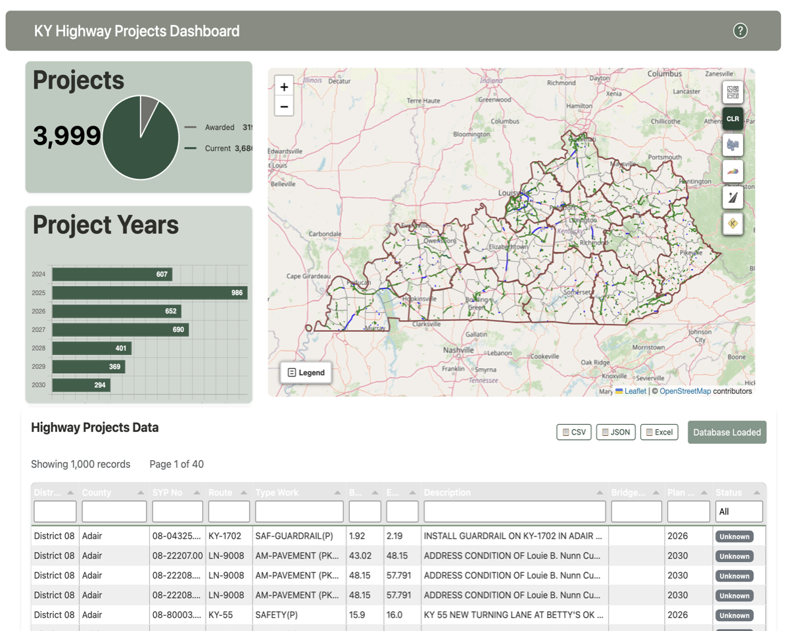

Welcome to the KY Highway Projects Dashboard! This help document will guide you through the main features and how to use the dashboard effectively.
View and explore highway projects across Kentucky. Zoom, pan, and click on project lines for more specific details. Zoom in and out by using the zoom button or mouse scroll wheel. If you double-click on the map, it will zoom in to the location incrementally. If you want to zoom out, you can use the zoom out button or hold down the "Shift" key and double-click on the map.
County/District filters (3rd & 4th buttons from the top) Use the buttons on the right side of the map to select one of the filters to get a dropdown list of counties or districts. Select a county name or district number to zoom the map to the boundary of that polygon. The graphs and the data table will also filter to display the filtered information.
Project Type filter (5th button from the top) The project type filters data from a curated list of project types. Individual projects can have multiple project types. If you select a project type, the map will zoom to the limits of all projects of that type. The graphs and data table will filter to display the filtered records.
The top graph is pie chart that shows the distribution of projects across both awarded and current projects. If you have made a county or district selection in the map, the pie chart will update to show only the projects that match the selection.
The bottom graph is a bar chart that displays the number of projects by 6-yr plan year. This chart will also update based on your map selections.
Browse, filter, sort, and export project data in a tabular format. The table includes columns for District, County, Project ID, Route, Type of Work, Beginning Milepoint, Ending Milepoint, Bridge ID (if part of project), Plan Year, and Status (if known). Filter and sort the table by clicking on the column headers. Export results as Excel, CSV, or Json files.
Q: How do I reset the dashboard?
A: Refresh the page or use the reset "CLR" button on the map.
Q: How do I use the KYTC API for route information?
A: Click on KYTC API button (bottom button on right hand side of map). A small dialog
will appear in the lower left corner over the legend button, instructing you to select the
route you are interested in learning more about. Double-click the map to zoom in to the
desired location. When you mouse-over the route, the mouse cursor will change from the
"hand" to a pointer. Click the route and you will see the unique identifier and milepoints
for the clicked route in the API dialog. Click the button on the dialog to send the request
to the API. The API will retrieve detailed route information from the API and return it to
a popup window overlying the graph area. You can then view the route details and export them
using the buttons on the API window.
Q: Who can I contact for support?
A: Please refer to the project README or contact the dashboard administrator.
For further assistance, please reach out to the developer directly.